UX audit: People (staff, roles, access)
1. Verdict
- No, the owner cannot onboard a new receptionist unaided, and the screen does not say so. Inviting creates a membership and a raw one-time token. I found no page in the app that consumes that token and no "forgot password" or "set password" link on sign-in. inferred
- Biggest risk: removing a leaver is a single press on a row menu with no confirmation and no consequence named (it ends every session, and the undo window is 24 hours, which the screen never says). Changing a role, by contrast, gets a proper confirmation. inferred from code; I did not press it
- The invite form defaults the role to Finance and the Property to nothing, so a hurried owner who types an email and presses the button creates a money-seeing user who can reach no Property. verified
- "Who can see money?" is not answerable at a glance: 31 ungrouped rows by 5 roles, and Manager has exactly the same ticks as Owner. verified
- What is good: plain-language permission names, no raw enums anywhere, a real role-change confirmation with last-administrator prediction, the three locales and RTL work, and a Back button is present.
2. Findings
| ID | Severity | Where | What happened | What I expected | Suggested fix | Effort | Evidence | Basis |
|---|---|---|---|---|---|---|---|---|
| PEOPLE-01 | blocks work | Invite dialog, Owner, any state | The dialog says "You pass the link on yourself" but the code shows a bare 43-character token in a text box (invite-dialog.tsx renders outcome.token), not a URL. The only consumer of the token is the module function accept(); nothing in apps/ calls it (grep) and edge-cases.csv SP-S1-32 says "no route is wired". The sign-in page has no set-password or forgot-password link. The invited user row exists and the membership is already active, so the person is on the roster as "Awaiting a password" with no way to get one. |
Invite, copy a working link, the receptionist opens it, sets a password and signs in on Monday. | Build the accept-invitation page and show a full URL; until then, say on the dialog that sign-in for new staff is not available. Email delivery (blueprint 5.12) is a separate prerequisite. | L | 03; sign-in screenshot not taken (page text read via snapshot). Not submitted. | inferred I could not and must not send an invitation, so the token display and the dead end were not run. |
| PEOPLE-02 | causes errors | People tab, row "..." menu, Owner and Manager | "Revoke" is the only item in the row menu and runs on one press: MembershipActions.run() calls revokeStaffMember directly with no dialog. The copy never says that every session of that person ends at once (SP-S1-11), that nothing is deleted, that the row stays as "Revoked", that "Undo" works only for 24 hours (SP-S1-22), or what happens to their open work. A refusal appears only after the press, in red next to the menu. Owner and Manager can also revoke themselves from their own row. |
A confirmation naming the person, "signed out everywhere now", "you can undo for 24 hours", and for self-revoke a warning like the role-change one. | Reuse the role-change confirmation pattern (confirm-role-change.tsx) for revoke and undo; show the undo deadline on the revoked row. |
S | 01 (menu present, not opened or pressed) | inferred from roster-table.tsx. Deliberately not pressed. |
| PEOPLE-03 | causes errors | Invite dialog, Owner and Manager | Role defaults to "Finance" (first item alphabetically: code picks roles[0]), the Properties field is empty and reads "No Property yet", and nothing warns that an invitee with no Property reaches nothing. No role description is shown anywhere in the picker. There is no way to choose "every Property" (code never sends a scope). |
No default role (force a choice), or the least-privileged role; a visible warning when no Property is chosen; one line describing the chosen role. | Start with an empty role field; show "Reaches no Property yet" in amber; add a one-line role description under the picker. | S | 03, 04, 05 | verified default and placeholder; inferred consequence of an empty Property. |
| PEOPLE-04 | causes errors | "What each role can do" tab and Invite, Manager | Manager has a tick on every one of the 31 permissions, identical to Owner. The only difference between them is reach (Owner = every Property). As Manager, the invite role list offers "Owner", so a Manager can create an Owner-equivalent colleague. The screen never explains what an Owner has that a Manager lacks. Manager sees the Owner row locked with "Their role or reach is above yours.", which is the only hint, and it is about reach, not role. | A visible difference, or a plain sentence: "Owner and Manager can do the same things; Owner reaches every Property." | Product decision first: if Manager should not see payroll, ledger or hand out Owner, remove those ticks. Then add a role description line under each column. | M | 02, 11 | verified grid and invite options. Whether the equality is intended is unknown. |
| PEOPLE-05 | causes errors | "What each role can do" tab, Owner, once an Organization has its own role | For an Organization-authored role every box is a live toggle that saves immediately (toggle() calls editRole), and the header "Retire" is a one-press menu item. Editing a role ends the sessions of everyone holding it (use-case.mmd: EDITROLE includes ENDSESS). The only warning is the "held by N" count in the column header; there is no confirmation and a refusal shows only as a line at the foot of the grid. Staging has no authored roles, so this was not seen. |
A confirmation: "4 people hold this role; saving signs them out." | Batch ticks behind a "Save changes" button with a count of affected people. | M | none (no authored role to look at) | inferred from permission-matrix.tsx. |
| PEOPLE-06 | slows me down | "What each role can do" tab, Owner; cross-screen | To answer "who can see money?" I had to read 31 flat rows. Money-related rows are scattered (Folio, charge, payment, ledger, data exports, rates, payroll) and there are no section headings. There is no "who holds this?" view per permission and no per-person effective-access view. Cross-screen: Analytics revenue figures are gated by the permission shown here as "Open and close a Folio" (handover doc), and Front Desk holds it. Signed in as Front Desk, Analytics shows the Revenue and "Money collected" cards (all 0.00 on this data). | Grouped rows (Front desk, Money, Staff, Setup...) and a "Money" shortcut or highlight; a person's name in the row for each role. | Group the catalogue; add a "who can see money" filter; name the revenue gate in plain words. | M | 02, 13 | verified flat grid and the Front Desk revenue cards; inferred that the gate is the Folio permission. |
| PEOPLE-07 | slows me down | Invite dialog and roster, Owner | The link is shown once and "never again". If the owner closes the dialog before copying it, nothing re-issues it: inviting an existing member returns "That person already has a membership" (invite() inserts with on conflict do nothing). The "Awaiting a password" badge offers no action. After the 24-hour undo window a revoked person also appears to hit that same refusal, although SP-S1-15/16 describe a re-invite path; I did not run it. |
A "New link" action on any "Awaiting a password" row, and a way to bring a revoked person back. | Add "Resend / new link" and "Re-add" row actions. | M | none | inferred; the revoked-person re-add is unknown. |
| PEOPLE-08 | slows me down | People tab, 375 px and 768 px, Owner | The table is about 728 px wide inside a card of 341 px at 375 and roughly 460 px at 768 (the sidebar stays open at 768). Properties, Status and the "..." Actions menu sit off-screen to the right with no scroll hint, so on a phone you can see a role picker but not Revoke. No page-level horizontal scroll. | Rows that stack on narrow widths, or at least a visible scroll cue. | Card layout below 768 px: email, role, status on one line, actions at the end. | M | 08, 09 | verified |
| PEOPLE-09 | slows me down | People tab, Owner, 5 rows | People are identified by email only (avatar initials are derived from it); there is no name column, no search, no filter by role or Property, no sort, and no pagination in the code (roster.map). Revoked people stay in the list permanently. With 30 staff the owner scrolls and reads addresses. |
Search box, role filter, "show revoked" toggle, a display name. | Add search and a revoked filter; a name field is a schema decision (code comment says so). | M | 01 | verified (emails, no search box at 5 rows); inferred (no pagination, revoked stay). |
| PEOPLE-10 | polish | Role-change confirmation, Owner | The dialog says "housekeeping... will go from Housekeeping to Manager. Every session they hold will end" and nothing about what they gain or lose. Going from Housekeeping to Manager would give them payroll and ledger access. Good: Cancel has focus, the title is a question, self-demotion and last-administrator cases have their own text (inferred). | A short "gains: payroll, ledger... / loses: ..." line. | Compute the permission difference and list the money and staff items. | M | 07 | verified dialog; cancelled with Escape, role unchanged afterwards (re-read the roster). |
| PEOPLE-11 | polish | Revoke and role change, last administrator | The last-administrator rule is predicted before the confirm for a role change (leavesNoAdministrator) but not for Revoke, where it is refused after the press with "An Organization must keep somebody who can add staff." That text does not say what to do (make another Owner first). Other failures are only "That was refused." |
The same pre-check on revoke, and a next step in the message. | Call leavesNoAdministrator for revoke; reword to "Make another Owner first." |
S | none | inferred |
| PEOPLE-12 | polish | All locales, row menu and grid | English "Revoke" is jargon; Turkish "Kaldır" and Arabic "إلغاء العضوية" read as "remove / cancel membership", so the three locales do not say the same thing. Role "Retire" is "Emekliye ayır" (retire as in pension) in Turkish and "إحالة إلى التقاعد" in Arabic; the English "Retire" itself does not say the role is switched off. Permission labels mix forms ("Reading the audit log", "Take a booking") and use product terms ("Folio", "Guests", "Close the day") with no explanation. | Plain, consistent verbs: "Remove access", "Switch off role". | One wording pass across the three catalogues. | S | 02, 10 | verified grid labels; inferred menu labels from messages.ts. |
| PEOPLE-13 | polish | "What each role can do" tab, all roles | Shipped-role boxes are disabled checkboxes, so the ticks are pale grey on white; at a glance the grid reads as empty. There is also no "Define a role" starting point such as "copy Front desk": the dialog is 31 unticked, ungrouped boxes in a scrolling modal. | Clearly readable ticks for read-only boxes; copy-from for a new role. | Use a solid tick icon for read-only state; add "Start from..." to the dialog. | S | 02, 06 | verified |
| PEOPLE-14 | polish | People, Front Desk | Front Desk is not denied. They see the whole roster (every colleague's email, role and Property) and the permission grid, read-only, with "You can see the team. An Owner or Manager can change it." That is the documented design ("any Staff Member reads the roster"), so it is clear and calm, but the sentence hard-codes two role names, and a custom role holding "Administer staff" would also qualify. | Decide deliberately whether a receptionist or housekeeper should see colleagues' emails. | Either keep, or say "People who manage staff can change it". | S | 12 | verified |


3. Jobs
| Job | Pass test (written first) | Result | Sec | Clicks |
|---|---|---|---|---|
| J1 First-time setup: invite the first receptionist | Person appears on the roster with the right role and Property, and can then sign in. | Fail (inferred). Stopped before submit, not persisted. Form reaches the right fields, but there is no working path to a password (PEOPLE-01) and the defaults are wrong (PEOPLE-03). | ~25 to fill | about 7 (Invite, type email, role open and pick, Property open and pick, Create) |
| J2 Most frequent: find who works here and their role | Answer within 5 s with no click. | Pass at 5 people. At 30 there is no search (PEOPLE-09). | <5 | 0 |
| J3 Bulk: onboard 30 staff | One upload or paste creates all 30. | Not built. No CSV or bulk path exists. 30 invites by hand is about 7 interactions each, roughly 200 clicks, plus passing 30 tokens on by hand. | n/a | ~200 (estimate) |
| J4 Change someone's role | Pick role, see the consequence named, confirm, row updates. | Pass up to the confirm: dialog names person, from and to, and that all sessions end. Stopped before the final button, not persisted. Missing: what they gain or lose (PEOPLE-10). | ~15 | 3 (picker, option, confirm) |
| J5 Remove a leaver's access the same hour | Consequence named before the click; undoable; open work addressed. | Fail (inferred). No confirmation and no consequence text (PEOPLE-02). I did not open the menu or press anything. Undo exists for 24 hours; open work is not mentioned anywhere. | n/a | 2 (menu, Revoke) |
| J6 "Who can see money?" | Answer in 30 s from this page alone. | Partial. I could read the money rows in about a minute, but the revenue gate lives under another name and another screen (PEOPLE-06). | ~60 | 1 (tab) |
| J7 Error recovery: I removed the wrong person | Obvious way back, time limit stated. | Not run. "Undo" is on the revoked row (inferred) but the 24-hour limit is not shown and a late undo says only "That was refused." | n/a | 1 (inferred) |
| J8 Other roles on the page | Manager can act within their ceiling; Front Desk is clearly limited. | Pass. Manager: all actions except on the Owner row, which shows "Their role or reach is above yours." Front Desk: read-only, no buttons, explained in one sentence (PEOPLE-14). | ~60 | ~6 |
4. Top changes
- I can invite a receptionist and she can set a password and sign in on Monday. (PEOPLE-01)
- I know exactly what removing someone does, how long I can take it back, and I cannot do it by accident. (PEOPLE-02, 11)
- A new invite cannot silently become a Finance user with no Property. (PEOPLE-03)
- I can see at a glance who can see or move money, in plain words. (PEOPLE-06)
- I understand the difference between Owner and Manager, and a Manager cannot mint an Owner. (PEOPLE-04)
- Changing what a role may do tells me how many people it affects before it saves. (PEOPLE-05, 10)
- I can get a new link for someone who lost theirs. (PEOPLE-07)
- I can use this on my phone, including removing access. (PEOPLE-08)
- I can search 30 people and tell them apart by name. (PEOPLE-09)
5. Inconsistencies
- Role change has a confirmation, revoke does not, although both end every session of the person. Same screen.
- Last-administrator rule is predicted for role change but only reported after the fact for revoke.
- Nav and heading: the page is "People" in English and Turkish ("Kişiler" on the tab) but "الفريق" (the team) in Arabic, and the code and summary say "team" and "Staff" in several places. Not wrong, but three words for one thing.
- The permission "Open and close a Folio" unlocks revenue figures in Analytics, a link that only the handover doc states. Other money screens (Finance, Data export) use their own gates with matching plain names.
- People sits beside "HR & Payroll"; the roster has emails only while HR holds staff records. The two lists are not linked (not checked beyond the nav; inferred).
6. Not built / needs backend work
- Bulk onboarding (CSV import or paste): not built, no screen and no row in the staff
edge-cases.csv. The roster page is a single-invite flow. Not a UX defect. - Accepting an invitation / setting a password: the module has
accept()but no route calls it (SP-S1-32). The invitation email depends on the Notifications module (blueprint 5.12), which does not exist. Listed under "Not this feature" inuse-case.mmd. - Changing a person's Property reach after the invite, and making someone organization-wide: the module commands exist (SP-S1-18, 19) but People has no assign or unassign control, and the invite form sends no scope. The handover doc calls this screen "built" with roles and the grid. Not shown in the UI.
- Employment, pay, contracts: belong to HR (
use-case.mmd"Not this feature"). - Control Plane permissions: a separate system and screen. Nothing on this page mixes the two (verified: no Control Plane wording on any screen I opened).
- Second factor for Owner/Manager: OA-DIFF-01 says it is a known gap against the blueprint. Relevant to a role-management screen, but not on this page.
- Organization switcher: OA-DIFF-04; one Organization on staging so not exercised.
7. What already works well and must not regress
- verified No raw enums on screen: "Every Property" for organization-wide, "No Property yet" for none, "Active / Awaiting a password / Revoked" with icon and word.
- verified Permission names are plain sentences in all three languages; Arabic mirrors correctly (dir=rtl, columns and menus flip) and Turkish reads naturally.
- verified The role-change confirmation: it names the person, from and to, and that sessions end, puts focus on Cancel, and Escape leaves the role unchanged.
- inferred Self-demotion and last-administrator cases are predicted before the confirm and block a pointless press; a stale roster is caught ("Somebody changed this role while you were deciding. Nothing was changed.").
- verified The row's controls adapt to the viewer: Manager cannot act on the Owner row and is told why in one line; Front Desk gets a read-only roster with a plain explanation.
- verified The invite email field uses native
type=emailandrequired: "abc" is rejected by the browser before any request (checked with the validity API, form not submitted). - verified A Back button (arrow, top left) is present and goes to Today with the Property kept. No console errors or warnings on the Owner page.
- verified The grid footnote states that role changes are audited and enforced by the database, not only by hidden buttons.
Appendix: evidence and limits
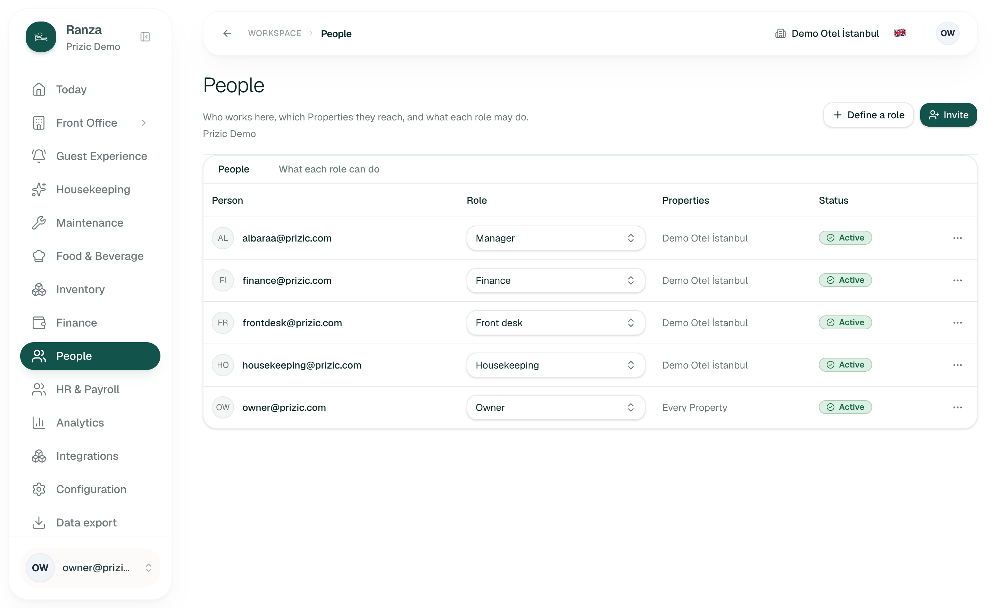
01 Owner roster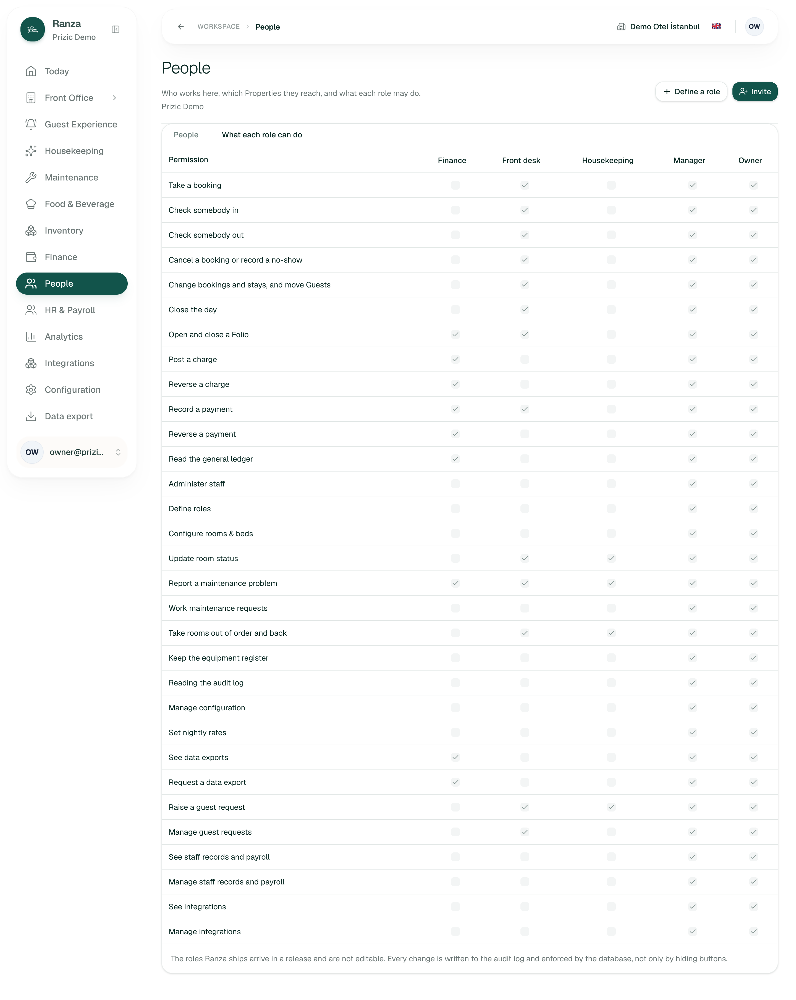
02 Roles grid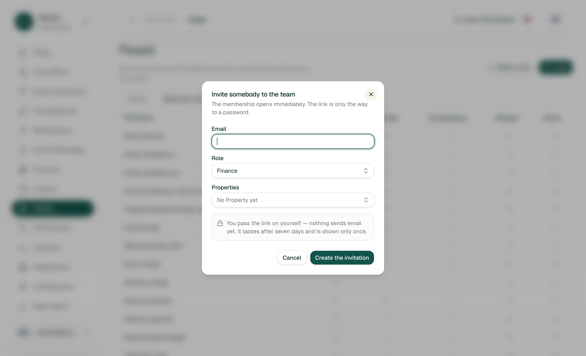
03 Invite dialog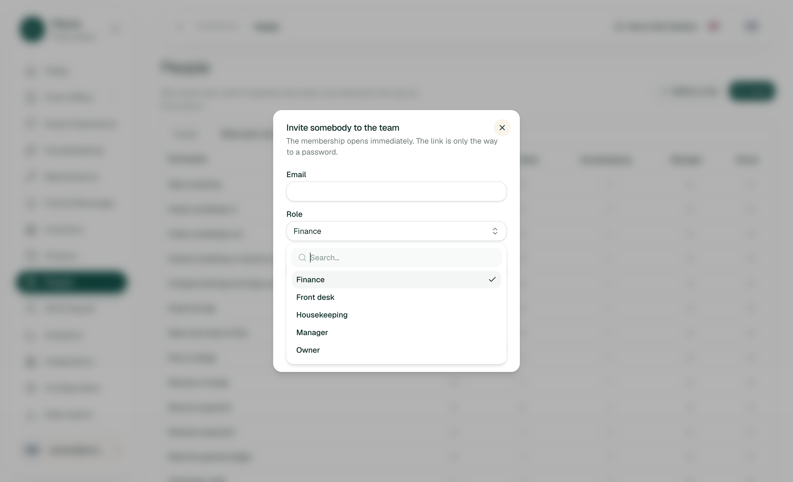
04 Invite role picker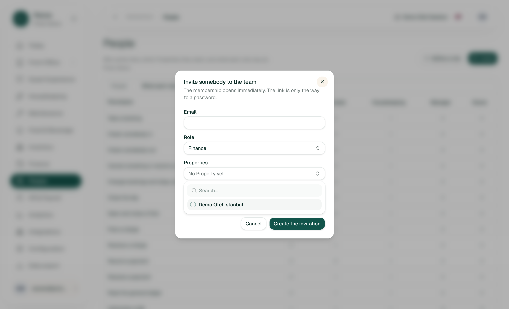
05 Property picker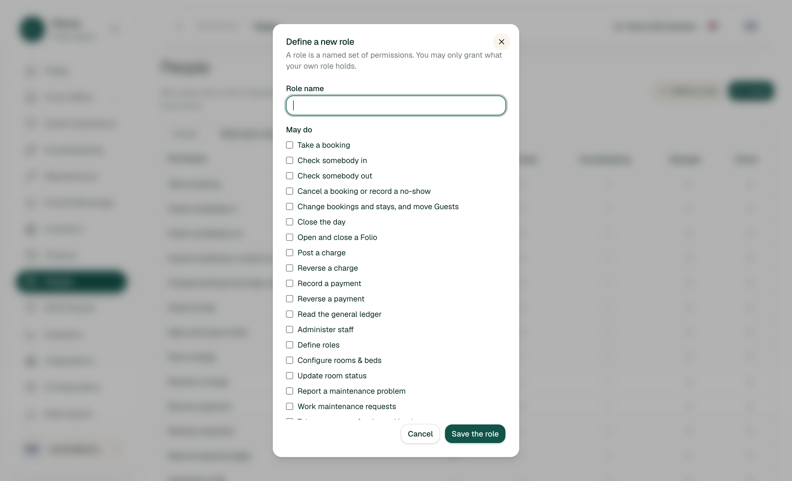
06 Define a role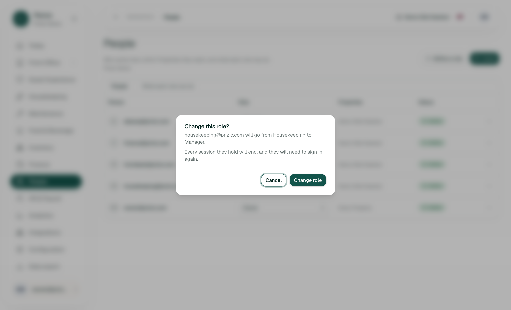
07 Role-change confirm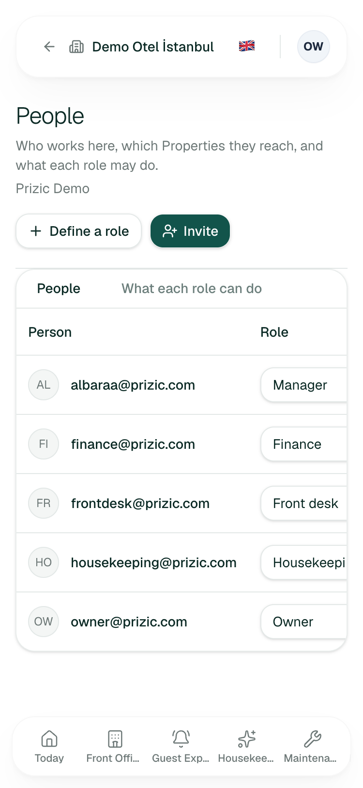
08 375 px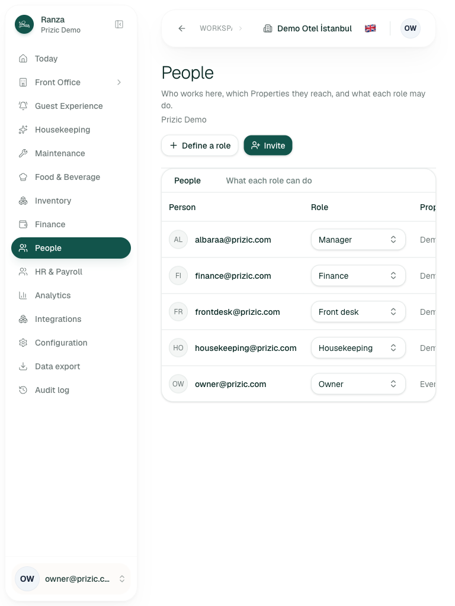
09 768 px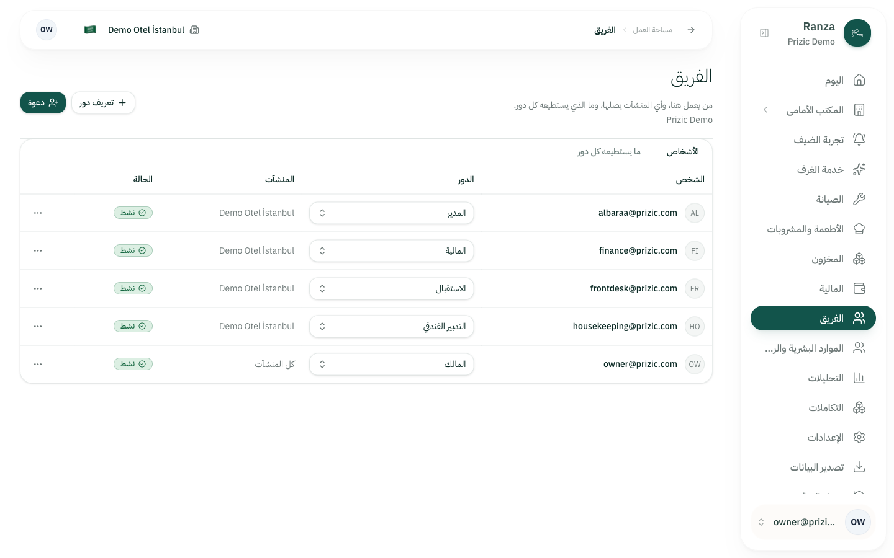
10 Arabic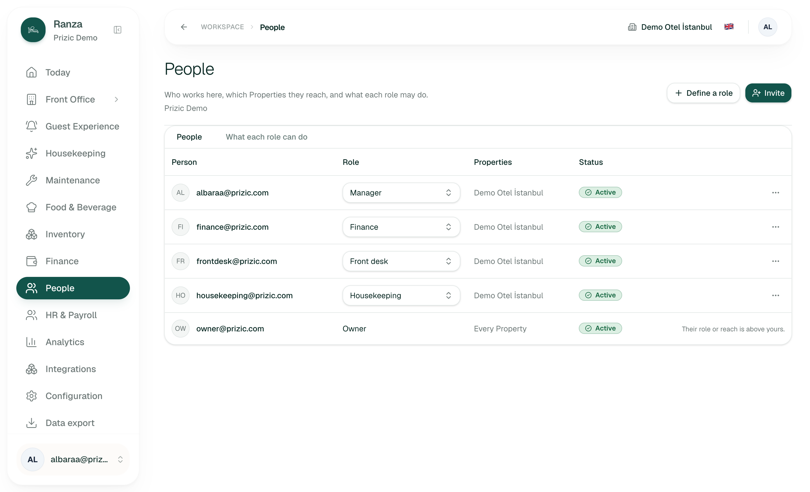
11 Manager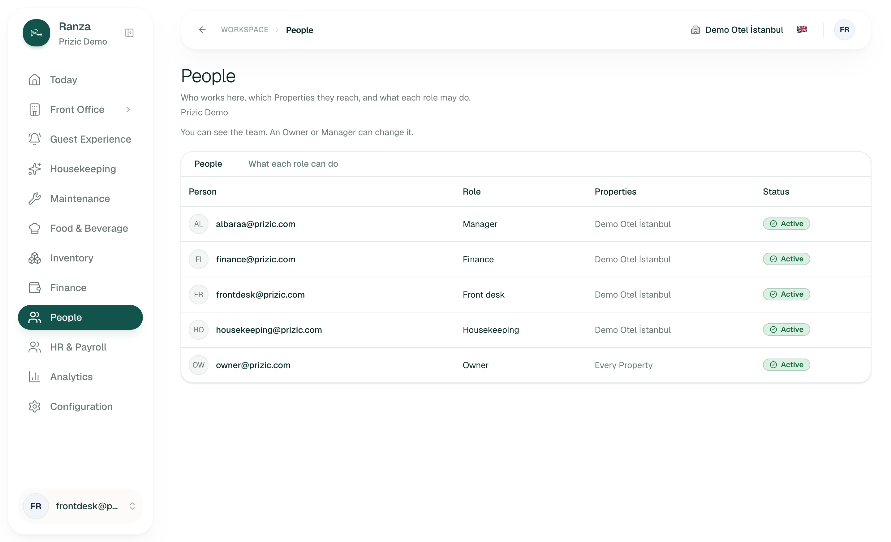
12 Front Desk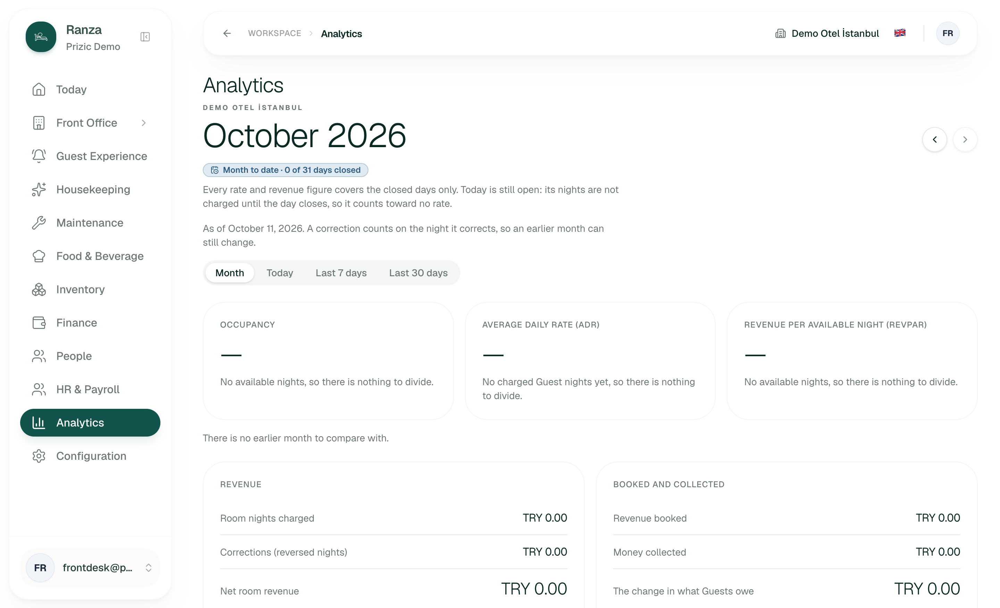
13 Front Desk Analytics- Not run, by mode: invite submit, revoke, undo, role change confirm, grid tick, retire, define role save. I did not open the row "..." menu either, because its only item runs on one press.
- Not seen on staging (no data): pending invitation, revoked member, Organization-authored roles, several Properties, an Organization with no Property (page shows a "not in your Subscription" empty state, inferred), 30+ people.
- The role picker's list items did not appear in the accessibility snapshot (only an empty listbox), though they exist in the page and keyboard selection worked. Screen-reader behaviour is unknown.
- I opened and cancelled the role-change dialog once, selecting a role in the picker. Afterwards the roster was re-read and every role was unchanged.